Análisis
Análisis
El cambio religioso en datos
Explora la identificación religiosa en Chile con las encuestas CEP y Bicentenario UC. Compara años, grupos de edad, sexo y generaciones.
Identificación religiosa en el tiempo
Cargando los datos de las encuestas…
Preguntas sobre el cambio religioso
Seis historias sobre la identificación religiosa en Chile, a partir de respuestas válidas ponderadas de CEP y Bicentenario UC. Cada proporción requiere al menos 30 casos en la categoría y 30 en el resto de su grupo. Cada segmento de las barras de composición también debe alcanzar ese mínimo.
Consultar la auditoría metodológica · Descargar las estimaciones (CSV)
La no afiliación es más frecuente en las cohortes jóvenes
¿Cómo se distribuye la identificación religiosa entre generaciones?
Entre Millennials y Generación Z, el 43,2 % declaró no tener religión en CEP y el 47,1 % en Bicentenario UC. Entre la Generación Silenciosa y los Boomers, las proporciones fueron 16,9 % y 23,7 %, respectivamente.
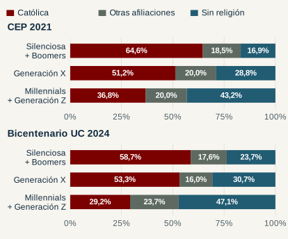
Las cohortes se estiman restando la edad al año de la encuesta. Se reúnen Millennials y Generación Z (1981–2012) para alcanzar el mínimo de casos en CEP. «Otras afiliaciones» reúne a evangélicos y demás religiones. Cada barra describe una cohorte observada en el año indicado.
Ver tabla por generación
| Encuesta | Año | Generación | Católica (%) | Otras afiliaciones (%) | Sin religión (%) | Casos válidos (n) |
|---|---|---|---|---|---|---|
| CEP | 2021 | Silenciosa + Boomers | 64,6 | 18,5 | 16,9 | 529 |
| CEP | 2021 | Generación X | 51,2 | 20,0 | 28,8 | 374 |
| CEP | 2021 | Millennials + Generación Z | 36,8 | 20,0 | 43,2 | 497 |
| Bicentenario UC | 2024 | Silenciosa + Boomers | 58,7 | 17,6 | 23,7 | 565 |
| Bicentenario UC | 2024 | Generación X | 53,3 | 16,0 | 30,7 | 423 |
| Bicentenario UC | 2024 | Millennials + Generación Z | 29,2 | 23,7 | 47,1 | 634 |
Menos jóvenes se identifican como católicos
¿Cómo cambió la identificación católica entre los 18 y los 29 años?
Entre el primer y el último año disponible, la proporción bajó del 68,4 % al 31,1 % en CEP y del 61,3 % al 23,8 % en Bicentenario UC.
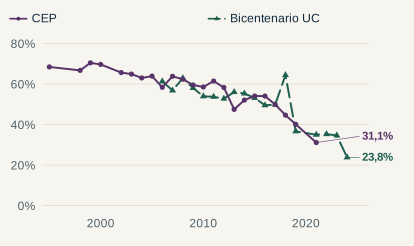
Cada año representa a personas de 18 a 29 años de la muestra correspondiente. Las encuestas son cortes transversales con distintos encuestados en cada levantamiento.
Ver tabla de catolicismo entre jóvenes
| Encuesta | Año | Católica (%) | Casos válidos (n) |
|---|---|---|---|
| CEP | 1995 | 68,4 | 403 |
| CEP | 1998 | 66,7 | 380 |
| CEP | 1999 | 70,5 | 346 |
| CEP | 2000 | 69,7 | 733 |
| CEP | 2002 | 65,7 | 1.077 |
| CEP | 2003 | 64,9 | 654 |
| CEP | 2004 | 63,0 | 595 |
| CEP | 2005 | 63,9 | 958 |
| CEP | 2006 | 58,4 | 629 |
| CEP | 2007 | 63,8 | 649 |
| CEP | 2008 | 62,4 | 342 |
| CEP | 2009 | 59,5 | 880 |
| CEP | 2010 | 58,5 | 605 |
| CEP | 2011 | 61,5 | 639 |
| CEP | 2012 | 58,3 | 933 |
| CEP | 2013 | 47,5 | 532 |
| CEP | 2014 | 52,1 | 575 |
| CEP | 2015 | 54,1 | 799 |
| CEP | 2016 | 54,1 | 465 |
| CEP | 2017 | 49,9 | 714 |
| CEP | 2018 | 44,7 | 235 |
| CEP | 2019 | 40,1 | 498 |
| CEP | 2021 | 31,1 | 246 |
| Bicentenario UC | 2006 | 61,3 | 472 |
| Bicentenario UC | 2007 | 56,8 | 453 |
| Bicentenario UC | 2008 | 62,9 | 465 |
| Bicentenario UC | 2009 | 58,0 | 490 |
| Bicentenario UC | 2010 | 53,9 | 453 |
| Bicentenario UC | 2011 | 53,7 | 489 |
| Bicentenario UC | 2012 | 52,8 | 464 |
| Bicentenario UC | 2013 | 56,0 | 453 |
| Bicentenario UC | 2014 | 55,3 | 422 |
| Bicentenario UC | 2015 | 53,1 | 433 |
| Bicentenario UC | 2016 | 49,5 | 467 |
| Bicentenario UC | 2017 | 49,9 | 374 |
| Bicentenario UC | 2018 | 64,4 | 376 |
| Bicentenario UC | 2019 | 36,7 | 431 |
| Bicentenario UC | 2021 | 35,0 | 387 |
| Bicentenario UC | 2022 | 35,3 | 340 |
| Bicentenario UC | 2023 | 34,6 | 247 |
| Bicentenario UC | 2024 | 23,8 | 235 |
Más hombres que mujeres declaran no tener religión
¿Cómo han variado el catolicismo y la no afiliación según el sexo registrado?
En el último año de cada encuesta, el 35,5 % de los hombres y el 29,2 % de las mujeres declararon no tener religión en CEP. En Bicentenario UC, las cifras fueron 42,6 % y 32,3 %. La identificación católica fue cercana entre ambos grupos en esos años.
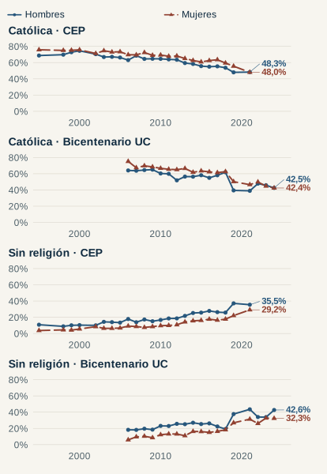
Se usan las dos categorías de sexo registradas por las encuestas. Los porcentajes se calculan dentro de cada grupo. Los años en que una proporción queda por debajo del mínimo de casos aparecen sin estimación.
Ver tabla por sexo registrado
| Encuesta | Año | Sexo registrado | Católica (%) | Sin religión (%) | Casos válidos (n) |
|---|---|---|---|---|---|
| CEP | 1995 | Hombres | 68,7 | 10,8 | 724 |
| CEP | 1995 | Mujeres | 75,8 | 3,7 | 777 |
| CEP | 1998 | Hombres | 69,8 | 8,8 | 628 |
| CEP | 1998 | Mujeres | 75,0 | 4,5 | 867 |
| CEP | 1999 | Hombres | 72,8 | 10,1 | 635 |
| CEP | 1999 | Mujeres | 75,2 | 4,2 | 860 |
| CEP | 2000 | Hombres | 74,5 | 10,4 | 1.277 |
| CEP | 2000 | Mujeres | 75,7 | 5,6 | 1.701 |
| CEP | 2002 | Hombres | 70,4 | 10,1 | 2.112 |
| CEP | 2002 | Mujeres | 71,2 | 8,5 | 2.317 |
| CEP | 2003 | Hombres | 66,9 | 14,4 | 1.170 |
| CEP | 2003 | Mujeres | 74,6 | 6,4 | 1.717 |
| CEP | 2004 | Hombres | 67,1 | 14,0 | 1.230 |
| CEP | 2004 | Mujeres | 73,0 | 6,4 | 1.737 |
| CEP | 2005 | Hombres | 66,2 | 13,4 | 1.882 |
| CEP | 2005 | Mujeres | 73,4 | 6,8 | 2.559 |
| CEP | 2006 | Hombres | 63,1 | 17,9 | 1.194 |
| CEP | 2006 | Mujeres | 69,7 | 9,2 | 1.775 |
| CEP | 2007 | Hombres | 68,5 | 13,9 | 1.193 |
| CEP | 2007 | Mujeres | 69,5 | 8,6 | 1.769 |
| CEP | 2008 | Hombres | 64,5 | 17,3 | 630 |
| CEP | 2008 | Mujeres | 72,4 | 7,6 | 863 |
| CEP | 2009 | Hombres | 64,7 | 15,1 | 1.870 |
| CEP | 2009 | Mujeres | 69,0 | 8,5 | 2.603 |
| CEP | 2010 | Hombres | 64,6 | 16,7 | 1.198 |
| CEP | 2010 | Mujeres | 69,3 | 9,7 | 1.712 |
| CEP | 2011 | Hombres | 63,9 | 18,6 | 1.236 |
| CEP | 2011 | Mujeres | 67,8 | 9,9 | 1.865 |
| CEP | 2012 | Hombres | 63,5 | 18,6 | 1.806 |
| CEP | 2012 | Mujeres | 68,2 | 10,8 | 2.718 |
| CEP | 2013 | Hombres | 59,5 | 21,7 | 1.185 |
| CEP | 2013 | Mujeres | 65,0 | 14,2 | 1.706 |
| CEP | 2014 | Hombres | 58,3 | 25,3 | 1.141 |
| CEP | 2014 | Mujeres | 62,6 | 15,7 | 1.696 |
| CEP | 2015 | Hombres | 55,7 | 25,7 | 1.626 |
| CEP | 2015 | Mujeres | 60,8 | 16,2 | 2.563 |
| CEP | 2016 | Hombres | 55,0 | 27,8 | 1.078 |
| CEP | 2016 | Mujeres | 62,5 | 17,6 | 1.693 |
| CEP | 2017 | Hombres | 55,4 | 26,3 | 1.674 |
| CEP | 2017 | Mujeres | 63,5 | 16,4 | 2.552 |
| CEP | 2018 | Hombres | 53,7 | 25,8 | 503 |
| CEP | 2018 | Mujeres | 59,5 | 17,7 | 865 |
| CEP | 2019 | Hombres | 48,0 | 37,1 | 1.064 |
| CEP | 2019 | Mujeres | 55,6 | 22,1 | 1.725 |
| CEP | 2021 | Hombres | 48,3 | 35,5 | 516 |
| CEP | 2021 | Mujeres | 48,0 | 29,2 | 885 |
| Bicentenario UC | 2006 | Hombres | 64,0 | 18,2 | 950 |
| Bicentenario UC | 2006 | Mujeres | 75,2 | 5,9 | 1.087 |
| Bicentenario UC | 2007 | Hombres | 63,7 | 18,2 | 805 |
| Bicentenario UC | 2007 | Mujeres | 67,3 | 9,6 | 1.228 |
| Bicentenario UC | 2008 | Hombres | 64,5 | 19,6 | 951 |
| Bicentenario UC | 2008 | Mujeres | 69,7 | 10,3 | 1.064 |
| Bicentenario UC | 2009 | Hombres | 65,0 | 18,5 | 930 |
| Bicentenario UC | 2009 | Mujeres | 68,4 | 8,5 | 1.077 |
| Bicentenario UC | 2010 | Hombres | 60,3 | 23,1 | 936 |
| Bicentenario UC | 2010 | Mujeres | 66,6 | 12,2 | 1.070 |
| Bicentenario UC | 2011 | Hombres | 59,9 | 22,9 | 928 |
| Bicentenario UC | 2011 | Mujeres | 65,5 | 13,1 | 1.073 |
| Bicentenario UC | 2012 | Hombres | 51,8 | 25,6 | 947 |
| Bicentenario UC | 2012 | Mujeres | 65,0 | 13,1 | 1.062 |
| Bicentenario UC | 2013 | Hombres | 56,4 | 25,2 | 851 |
| Bicentenario UC | 2013 | Mujeres | 66,5 | 11,0 | 1.138 |
| Bicentenario UC | 2014 | Hombres | 56,4 | 27,0 | 889 |
| Bicentenario UC | 2014 | Mujeres | 61,7 | 16,3 | 1.121 |
| Bicentenario UC | 2015 | Hombres | 58,1 | 25,3 | 911 |
| Bicentenario UC | 2015 | Mujeres | 63,5 | 16,1 | 1.097 |
| Bicentenario UC | 2016 | Hombres | 54,9 | 26,2 | 790 |
| Bicentenario UC | 2016 | Mujeres | 62,3 | 15,1 | 1.214 |
| Bicentenario UC | 2017 | Hombres | 58,1 | 22,4 | 785 |
| Bicentenario UC | 2017 | Mujeres | 61,3 | 16,3 | 1.203 |
| Bicentenario UC | 2018 | Hombres | 61,8 | 19,2 | 766 |
| Bicentenario UC | 2018 | Mujeres | 62,5 | 18,3 | 1.210 |
| Bicentenario UC | 2019 | Hombres | 39,4 | 37,6 | 746 |
| Bicentenario UC | 2019 | Mujeres | 50,2 | 26,9 | 1.290 |
| Bicentenario UC | 2021 | Hombres | 38,9 | 43,5 | 667 |
| Bicentenario UC | 2021 | Mujeres | 46,5 | 31,4 | 1.317 |
| Bicentenario UC | 2022 | Hombres | 47,8 | 34,0 | 663 |
| Bicentenario UC | 2022 | Mujeres | 49,8 | 26,0 | 1.225 |
| Bicentenario UC | 2023 | Hombres | 45,8 | 33,9 | 565 |
| Bicentenario UC | 2023 | Mujeres | 44,7 | 32,7 | 996 |
| Bicentenario UC | 2024 | Hombres | 42,5 | 42,6 | 559 |
| Bicentenario UC | 2024 | Mujeres | 42,4 | 32,3 | 1.064 |
La no afiliación es menos frecuente entre las personas de mayor edad
¿Qué proporción declara no tener religión en cada grupo etario?
En CEP 2021, el 48,0 % de las personas de 18 a 29 años declaró no tener religión, frente al 16,6 % de las de 60 años o más. En Bicentenario UC 2024, las proporciones fueron 51,5 % y 23,7 %, respectivamente.
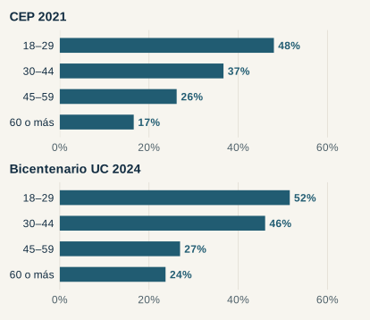
Se muestran estimaciones puntuales ponderadas. Las bases consolidadas carecen de información suficiente para reconstruir ambos diseños muestrales y calcular intervalos de confianza válidos.
Ver tabla por grupo etario
| Encuesta | Año | Grupo etario | Sin religión (%) | Casos válidos (n) |
|---|---|---|---|---|
| CEP | 2021 | 18–29 | 48,0 | 246 |
| CEP | 2021 | 30–44 | 36,7 | 331 |
| CEP | 2021 | 45–59 | 26,2 | 361 |
| CEP | 2021 | 60 o más | 16,6 | 463 |
| Bicentenario UC | 2024 | 18–29 | 51,5 | 235 |
| Bicentenario UC | 2024 | 30–44 | 46,0 | 422 |
| Bicentenario UC | 2024 | 45–59 | 27,0 | 400 |
| Bicentenario UC | 2024 | 60 o más | 23,7 | 566 |
Se estrecha la distancia entre católicos y personas sin religión
¿Cuántos puntos porcentuales separan ambas identificaciones?
Entre el primer y el último año observado, la brecha pasó de 65,2 a 16,0 puntos porcentuales en CEP y de 58,0 a 5,1 puntos en Bicentenario UC.
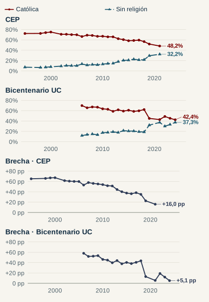
Para cada encuesta y año, se resta el porcentaje sin religión del porcentaje católico. Ambos usan el mismo denominador ponderado dentro de cada muestra.
Ver tabla de la brecha histórica
| Encuesta | Año | Católica (%) | Sin religión (%) | Diferencia (pp) | Casos válidos (n) |
|---|---|---|---|---|---|
| CEP | 1995 | 72,3 | 7,2 | 65,2 | 1.501 |
| CEP | 1998 | 72,5 | 6,6 | 65,9 | 1.495 |
| CEP | 1999 | 74,0 | 7,1 | 66,9 | 1.495 |
| CEP | 2000 | 75,2 | 7,9 | 67,3 | 2.978 |
| CEP | 2002 | 70,8 | 9,3 | 61,6 | 4.429 |
| CEP | 2003 | 70,9 | 10,3 | 60,6 | 2.887 |
| CEP | 2004 | 70,2 | 10,1 | 60,1 | 2.967 |
| CEP | 2005 | 69,9 | 10,0 | 59,9 | 4.441 |
| CEP | 2006 | 66,5 | 13,4 | 53,0 | 2.969 |
| CEP | 2007 | 69,1 | 11,2 | 57,9 | 2.962 |
| CEP | 2008 | 68,6 | 12,3 | 56,2 | 1.493 |
| CEP | 2009 | 66,9 | 11,7 | 55,2 | 4.473 |
| CEP | 2010 | 67,0 | 13,1 | 53,9 | 2.910 |
| CEP | 2011 | 65,9 | 14,2 | 51,8 | 3.101 |
| CEP | 2012 | 65,9 | 14,6 | 51,3 | 4.524 |
| CEP | 2013 | 62,3 | 17,9 | 44,4 | 2.891 |
| CEP | 2014 | 60,5 | 20,3 | 40,2 | 2.837 |
| CEP | 2015 | 58,3 | 20,8 | 37,5 | 4.189 |
| CEP | 2016 | 58,8 | 22,6 | 36,3 | 2.771 |
| CEP | 2017 | 59,6 | 21,3 | 38,3 | 4.226 |
| CEP | 2018 | 56,7 | 21,6 | 35,1 | 1.368 |
| CEP | 2019 | 51,9 | 29,4 | 22,6 | 2.789 |
| CEP | 2021 | 48,2 | 32,2 | 16,0 | 1.401 |
| Bicentenario UC | 2006 | 69,8 | 11,8 | 58,0 | 2.037 |
| Bicentenario UC | 2007 | 65,6 | 13,7 | 51,9 | 2.033 |
| Bicentenario UC | 2008 | 67,2 | 14,8 | 52,4 | 2.015 |
| Bicentenario UC | 2009 | 66,8 | 13,3 | 53,4 | 2.007 |
| Bicentenario UC | 2010 | 63,6 | 17,4 | 46,2 | 2.006 |
| Bicentenario UC | 2011 | 62,7 | 17,9 | 44,8 | 2.001 |
| Bicentenario UC | 2012 | 58,7 | 19,1 | 39,7 | 2.009 |
| Bicentenario UC | 2013 | 61,7 | 17,8 | 43,9 | 1.989 |
| Bicentenario UC | 2014 | 59,1 | 21,5 | 37,7 | 2.010 |
| Bicentenario UC | 2015 | 60,9 | 20,6 | 40,3 | 2.008 |
| Bicentenario UC | 2016 | 58,6 | 20,6 | 38,1 | 2.004 |
| Bicentenario UC | 2017 | 59,7 | 19,3 | 40,5 | 1.988 |
| Bicentenario UC | 2018 | 62,2 | 18,7 | 43,5 | 1.976 |
| Bicentenario UC | 2019 | 45,0 | 32,1 | 13,0 | 2.036 |
| Bicentenario UC | 2021 | 42,8 | 37,3 | 5,5 | 1.984 |
| Bicentenario UC | 2022 | 48,8 | 29,9 | 18,9 | 1.888 |
| Bicentenario UC | 2023 | 45,2 | 33,3 | 12,0 | 1.561 |
| Bicentenario UC | 2024 | 42,4 | 37,3 | 5,1 | 1.623 |
Ambas encuestas registran más personas sin religión
¿Qué muestran CEP y Bicentenario UC en los años que comparten?
Entre 2006 y 2021, la no afiliación subió del 13,4 % al 32,2 % en CEP y del 11,8 % al 37,3 % en Bicentenario UC. La identificación católica fue menor en 2021 que en 2006 en ambas fuentes.
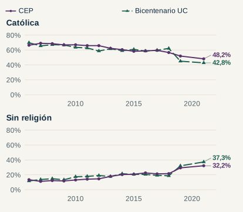
CEP pregunta por pertenencia o cercanía y Bicentenario UC por la religión que profesa la persona. Los períodos de terreno y la cobertura también difieren. En 2021, por ejemplo, CEP incluyó población urbana y rural y Bicentenario UC cubrió el universo urbano de su diseño. En Bicentenario UC cambió el marco censal entre 2018 y 2019. Cada fuente conserva su muestra y ponderador.
Ver tabla de los años comunes
| Encuesta | Año | Católica (%) | Sin religión (%) | Casos válidos (n) |
|---|---|---|---|---|
| CEP | 2006 | 66,5 | 13,4 | 2.969 |
| CEP | 2007 | 69,1 | 11,2 | 2.962 |
| CEP | 2008 | 68,6 | 12,3 | 1.493 |
| CEP | 2009 | 66,9 | 11,7 | 4.473 |
| CEP | 2010 | 67,0 | 13,1 | 2.910 |
| CEP | 2011 | 65,9 | 14,2 | 3.101 |
| CEP | 2012 | 65,9 | 14,6 | 4.524 |
| CEP | 2013 | 62,3 | 17,9 | 2.891 |
| CEP | 2014 | 60,5 | 20,3 | 2.837 |
| CEP | 2015 | 58,3 | 20,8 | 4.189 |
| CEP | 2016 | 58,8 | 22,6 | 2.771 |
| CEP | 2017 | 59,6 | 21,3 | 4.226 |
| CEP | 2018 | 56,7 | 21,6 | 1.368 |
| CEP | 2019 | 51,9 | 29,4 | 2.789 |
| CEP | 2021 | 48,2 | 32,2 | 1.401 |
| Bicentenario UC | 2006 | 69,8 | 11,8 | 2.037 |
| Bicentenario UC | 2007 | 65,6 | 13,7 | 2.033 |
| Bicentenario UC | 2008 | 67,2 | 14,8 | 2.015 |
| Bicentenario UC | 2009 | 66,8 | 13,3 | 2.007 |
| Bicentenario UC | 2010 | 63,6 | 17,4 | 2.006 |
| Bicentenario UC | 2011 | 62,7 | 17,9 | 2.001 |
| Bicentenario UC | 2012 | 58,7 | 19,1 | 2.009 |
| Bicentenario UC | 2013 | 61,7 | 17,8 | 1.989 |
| Bicentenario UC | 2014 | 59,1 | 21,5 | 2.010 |
| Bicentenario UC | 2015 | 60,9 | 20,6 | 2.008 |
| Bicentenario UC | 2016 | 58,6 | 20,6 | 2.004 |
| Bicentenario UC | 2017 | 59,7 | 19,3 | 1.988 |
| Bicentenario UC | 2018 | 62,2 | 18,7 | 1.976 |
| Bicentenario UC | 2019 | 45,0 | 32,1 | 2.036 |
| Bicentenario UC | 2021 | 42,8 | 37,3 | 1.984 |
Series y lecturas publicadas
Las lecturas de archivo se basan en los gráficos de la publicación original, calculados sin ponderar. En CEP y Bicentenario UC, los contrastes por cohorte describen grupos observados en cortes transversales.
Encuesta CEP Serie histórica y análisis generacional
Encuesta CEP
La Encuesta CEP es la serie de opinión pública más extensa disponible en Chile, con levantamientos periódicos desde la década de 1990. Su continuidad temporal permite observar con mayor precisión las transformaciones en la estructura religiosa del país
Identificación religiosa
En este primer gráfico se presenta la evolución de la identificación religiosa declarada por los encuestados.
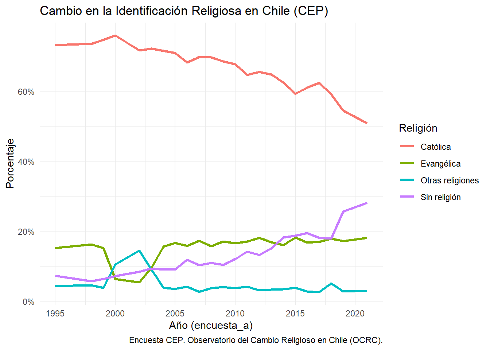
Fuente: Encuesta CEP. Observatorio del Cambio Religioso en Chile (OCRC).
El gráfico evidencia una transformación profunda pero gradual en la estructura de identificación religiosa en Chile entre mediados de los años noventa y comienzos de la década de 2020.
En primer lugar, se observa una disminución sostenida de la identificación católica. A mediados de los noventa, cerca de siete de cada diez chilenos se declaraban católicos. A partir de los años 2000 comienza un descenso progresivo, con una caída más marcada después de 2015. Hacia el final del período, la proporción se sitúa en torno a la mitad de la población. El declive no es abrupto en sus primeras etapas, pero sí acumulativo y estructural.
En segundo lugar, la identificación evangélica muestra una notable estabilidad en el largo plazo. Tras una fluctuación puntual a comienzos de los 2000, la proporción se consolida en torno al 15–18%, sin evidenciar un crecimiento explosivo. Esto sugiere que el debilitamiento del catolicismo no se traduce automáticamente en una transferencia proporcional hacia el mundo evangélico.
El cambio más significativo ocurre en el grupo que declara no tener religión. Desde niveles cercanos al 6–7% en los años noventa, esta categoría aumenta de manera sostenida a partir de la década de 2000, con un salto particularmente visible en el período posterior a 2018. En los últimos años observados, la no afiliación se aproxima o supera el 25%, convirtiéndose en el segundo grupo más numeroso después del catolicismo.
Las “otras religiones” permanecen relativamente marginales y estables, lo que indica que el proceso no está marcado por una fuerte diversificación religiosa no cristiana, sino más bien por un crecimiento de la desafiliación.
En conjunto, el patrón observado sugiere que el cambio religioso chileno no se explica principalmente como una recomposición entre denominaciones cristianas, sino como un proceso de erosión de la identificación tradicional y expansión de la no afiliación. Más que un simple pluralismo, los datos apuntan hacia una reconfiguración del campo religioso donde la pérdida de centralidad institucional —especialmente del catolicismo— constituye el fenómeno dominante.
Identificación religiosa por cohorte
El cambio en la identificación religiosa en Chile no es homogéneo, sino con comportamiento particular marcado por la generación. Como se observa en la figura que se encuentra debajo, las distintas cohortes presentan trayectorias diferenciadas tanto en niveles como en ritmos de cambio.
En primer lugar, las cohortes más antiguas (Silenciosa + Boomers) muestran altos niveles de identificación católica a lo largo de todo el período, con una disminución moderada en el tiempo. En este grupo, la afiliación religiosa se mantiene relativamente estable y la proporción de personas sin religión crece de forma gradual, pero sin alcanzar niveles predominantes.
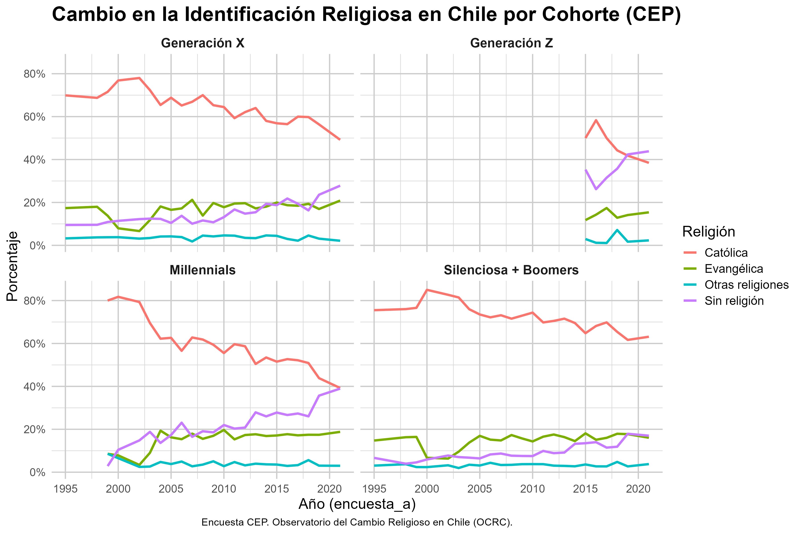
Fuente: Encuesta CEP. Observatorio del Cambio Religioso en Chile (OCRC).
En contraste, las generaciones más jóvenes presentan un patrón distinto. Tanto en Millennials como en la Generación Z se observa un descenso más pronunciado del catolicismo, acompañado de un aumento sostenido de la población sin afiliación religiosa. Este proceso es especialmente visible en la Generación Z, donde en los años más recientes la proporción de personas sin religión iguala o incluso supera a la de católicos.
La Generación X ocupa una posición intermedia: si bien presenta niveles iniciales altos de identificación católica, muestra una tendencia clara de declive, junto con un aumento progresivo de la no afiliación. Esto sugiere que el cambio religioso no ocurre de manera abrupta, sino que se despliega gradualmente a través de las cohortes.
Por su parte, la identificación evangélica se mantiene relativamente estable en todas las generaciones, con variaciones menores en el tiempo. Esto indica que el crecimiento evangélico, observado en décadas anteriores, no sigue una lógica de expansión continua en las cohortes más recientes, sino más bien de estabilización.
En conjunto, estos resultados sugieren que el proceso de cambio religioso en Chile se explica en gran medida por un reemplazo generacional. Las nuevas cohortes no solo presentan menores niveles de identificación católica desde el inicio, sino que además muestran una mayor propensión a la no afiliación religiosa. De este modo, el declive agregado del catolicismo no responde únicamente a cambios individuales a lo largo del ciclo de vida, sino a diferencias estructurales entre generaciones.
Bicentenario UC Serie histórica y análisis generacional
Encuesta Bicentenario UC
Como indican en su página web (https://encuestabicentenario.uc.cl/quienes-somos/) la Encuesta Bicentenario es un proyecto de la Pontificia Universidad Católica de Chile, cuyo propósito es obtener información altamente confiable y sostenida en el tiempo acerca del estado de la sociedad chilena en tópicos relevantes y de alto impacto que permitan develar sus rasgos fundamentales.
Este estudio nació en el 2006 con la finalidad de conocer lo que pensaban los chilenos de cara al Bicentenario. Desde entonces se ha mantenido año tras año, lo que ha permitido contar con información estadística relevante por más de una década.
Para la presente página se trabaja con una versión no oficial que juntó las bases de todos los años. Para poder acceder a ella se puede desacargar desde el repositorio de la página en el perfil de GitHub.
Identificación religiosa
El gráfico muestra la evolución de la identificación religiosa en Chile a partir de las distintas olas de la Encuesta Bicentenario, permitiendo observar los cambios ocurridos desde mediados de los años 2000 hasta comienzos de la década de 2020.
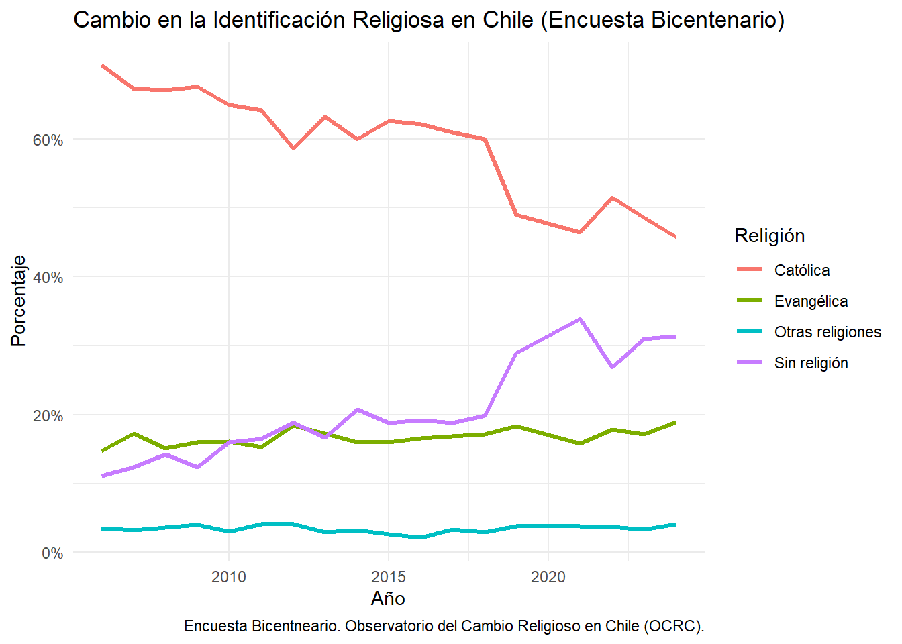
Fuente: Encuesta Bicentenario. Observatorio del Cambio Religioso en Chile (OCRC).
En primer lugar, se aprecia una disminución sostenida de la identificación católica. A mediados de los años 2000, cerca de dos tercios de la población se declaraban católicos. Durante la década siguiente el descenso es gradual, con fluctuaciones menores pero una tendencia claramente negativa. A partir de fines de la década de 2010 la caída se vuelve más pronunciada, situándose en torno al 45–50% en los últimos años observados. El patrón general confirma una pérdida persistente de centralidad del catolicismo en la estructura religiosa del país.
En segundo lugar, la identificación evangélica muestra una notable estabilidad en el tiempo. Desde el inicio del período analizado, la proporción de personas que se declaran evangélicas se mantiene en torno al 15–18%, con variaciones relativamente acotadas entre años. Al igual que en otras fuentes de datos, esto sugiere que el debilitamiento del catolicismo no se traduce necesariamente en un crecimiento equivalente del mundo evangélico, cuyo tamaño parece mantenerse relativamente constante en el agregado nacional.
El cambio más significativo se observa en el grupo que declara no tener religión. A mediados de los años 2000 esta categoría se situaba en torno al 10–12% de la población, pero comienza a aumentar de manera sostenida durante la década siguiente. El incremento se vuelve particularmente visible a partir de la segunda mitad de la década de 2010, alcanzando niveles cercanos o superiores al 30% en los últimos años del período. De este modo, la no afiliación religiosa pasa a constituirse en el segundo grupo más numeroso después del catolicismo.
Por su parte, las “otras religiones” mantienen una presencia relativamente baja y estable a lo largo del tiempo, generalmente por debajo del 5% de la población. Esto indica que el cambio religioso en Chile no está asociado principalmente a una diversificación significativa hacia tradiciones religiosas minoritarias.
En conjunto, el patrón observado es consistente con el identificado en otras encuestas nacionales: el cambio religioso en Chile se caracteriza principalmente por la disminución de la identificación católica y el crecimiento sostenido de la no afiliación. Más que un proceso de recomposición entre denominaciones cristianas, los datos sugieren una transformación más profunda del campo religioso, marcada por la pérdida de centralidad de las instituciones tradicionales y la expansión de identidades religiosas más débiles o inexistentes.
Identificación religiosa por cohorte
Al igual que en otras fuentes, los datos de la Encuesta Bicentenario muestran que el cambio en la identificación religiosa en Chile sigue un patrón generacional. Sin embargo, en este caso las trayectorias se observan de manera particularmente nítida, permitiendo distinguir diferencias tanto en niveles como en ritmos de transformación entre cohortes.
Las generaciones más antiguas (Silenciosa + Boomers) mantienen altos niveles de identificación católica durante todo el período observado, con una disminución gradual pero no abrupta. En este grupo, el crecimiento de la población sin religión es moderado y no alcanza a desplazar el predominio histórico del catolicismo.
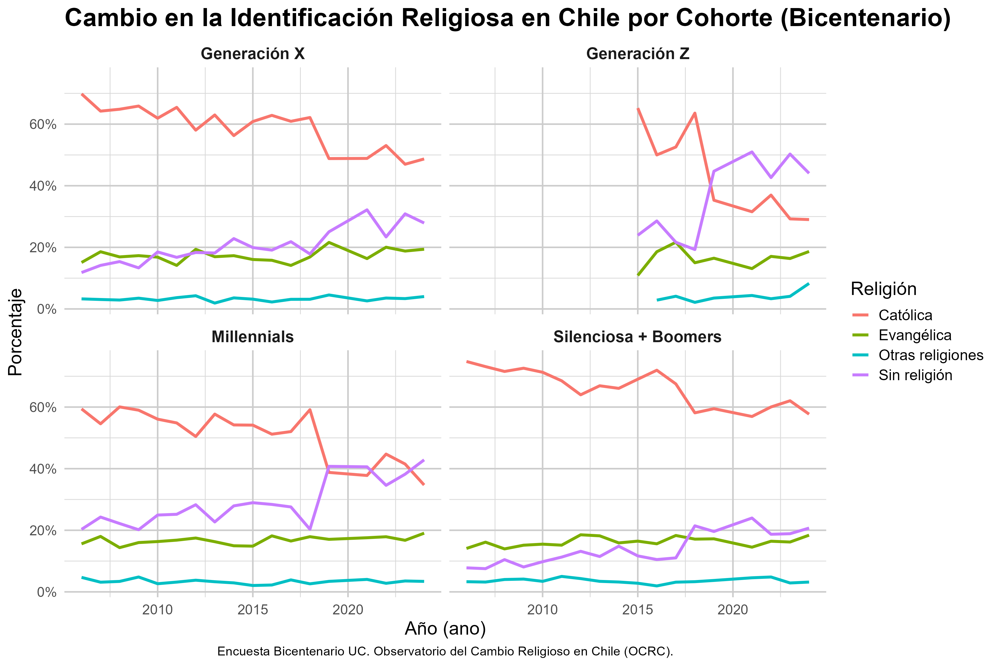
Fuente: Encuesta Bicentenario. Observatorio del Cambio Religioso en Chile (OCRC).
En contraste, las generaciones más jóvenes presentan un cambio más acelerado. En la Generación X ya se observa una caída sostenida de la identificación católica, acompañada de un aumento progresivo de la no afiliación religiosa. Este patrón se intensifica en los Millennials, donde el descenso del catolicismo es más pronunciado y la proporción de personas sin religión alcanza niveles significativamente más altos hacia el final de la serie.
El caso de la Generación Z es particularmente ilustrativo. En esta cohorte, la proporción de personas sin religión crece rápidamente y supera a la identificación católica en los años más recientes. Esto sugiere que las nuevas generaciones no solo presentan menores niveles de religiosidad tradicional, sino que además configuran un escenario en el cual la no afiliación pasa a ser una opción mayoritaria.
Por su parte, la identificación evangélica se mantiene relativamente estable en todas las cohortes, sin evidenciar un crecimiento sostenido en las generaciones más jóvenes. Este patrón refuerza la idea de que el cambio religioso contemporáneo en Chile no se explica principalmente por la sustitución del catolicismo por otras religiones, sino por el aumento de la población sin afiliación.
En conjunto, estos resultados apuntan a que el proceso de cambio religioso en Chile está fuertemente impulsado por el reemplazo generacional. Las diferencias observadas entre cohortes no solo reflejan cambios a lo largo del ciclo de vida, sino que dan cuenta de transformaciones más profundas en la forma en que las distintas generaciones se relacionan con la religión.
ELSOC Resultados del estudio longitudinal
ELSOC (Estudio Longitudinal Social de Chile, COES)
El Estudio Longitudinal Social de Chile (ELSOC) fue una encuesta realizada de forma anual a la población urbana chilena desde el 2016 hasta el 2023. Como bien señalan en su página web (https://conferencias.coes.cl/encuesta-panel/) el fin de deicha herramienta era evaluar la manera cómo piensan, sienten y se comportan los chilenos en torno a un conjunto de temas referidos al conflicto y la cohesión social en el país.
Identificación religiosa
El gráfico basado en ELSOC permite observar la evolución de la identificación religiosa en Chile a partir de un diseño longitudinal, siguiendo a los mismos individuos a lo largo de siete olas. Esto introduce una diferencia fundamental respecto a encuestas transversales: los cambios observados reflejan, en mayor medida, transformaciones reales en las trayectorias individuales y no solo reemplazos generacionales.
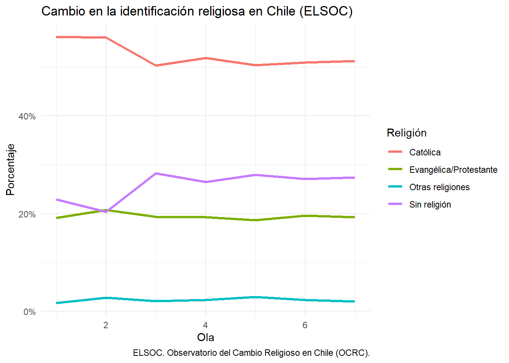
Fuente: Encuesta ELSOC. Observatorio del Cambio Religioso en Chile (OCRC).
En primer lugar, la identificación católica muestra una disminución relevante entre las primeras olas del panel, pasando de niveles cercanos al 55% a aproximadamente un 50%. Posteriormente, la serie se estabiliza, manteniéndose en torno a ese nivel hasta el final del período. Este patrón sugiere que el debilitamiento del catolicismo ocurre con mayor intensidad en una fase inicial, seguido de una cierta consolidación.
En segundo lugar, la identificación evangélica/protestante se mantiene notablemente estable a lo largo de todas las olas, fluctuando levemente en torno al 19–20%. Al igual que en los datos del CEP, esto indica que el cambio religioso no se explica principalmente por un traspaso masivo desde el catolicismo hacia otras denominaciones cristianas.
En tercer lugar, el grupo sin religión presenta un aumento significativo entre las primeras olas, pasando de aproximadamente un 23% a cerca de un 28%. A partir de ese punto, la proporción se estabiliza con leves fluctuaciones. Este comportamiento sugiere que una parte importante del proceso de desafiliación ocurre relativamente temprano en el período observado.
Las “otras religiones” permanecen en niveles bajos y estables, sin evidenciar un crecimiento sostenido.
En conjunto, el patrón longitudinal refuerza la interpretación de que el cambio religioso en Chile está marcado por procesos de desafiliación más que por recomposición denominacional. Dado que se sigue a los mismos individuos en el tiempo, estos resultados sugieren que el aumento de la no afiliación no es únicamente un fenómeno generacional, sino que también responde a cambios en la identificación religiosa a lo largo del ciclo de vida.
Más ampliamente, los datos apuntan a un proceso de reconfiguración del campo religioso en el cual la pérdida de centralidad del catolicismo se combina con una expansión de posiciones de no afiliación relativamente estables, una vez que estas se adoptan.
Identificación religiosa por cohorte
El análisis por cohortes utilizando datos de ELSOC introduce una perspectiva complementaria a la observada en encuestas transversales. A diferencia de estas últimas, el diseño longitudinal permite seguir a los mismos individuos a lo largo del tiempo, lo que hace posible distinguir entre cambios generacionales y transformaciones dentro de las propias trayectorias individuales.
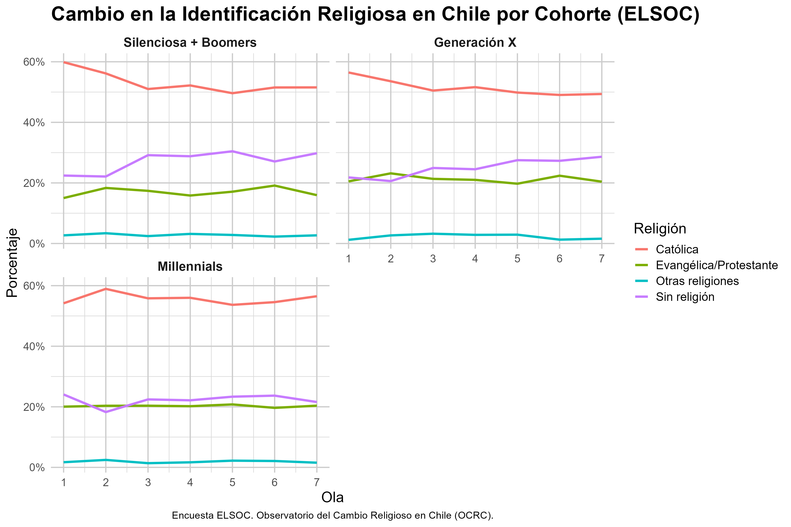
Fuente: Encuesta ELSOC. Observatorio del Cambio Religioso en Chile (OCRC).
En primer lugar, se observa que las diferencias entre cohortes existen, pero son menos pronunciadas que en las encuestas transversales. Las generaciones más antiguas (Silenciosa + Boomers) mantienen niveles más altos de identificación católica y menores niveles de no afiliación en comparación con cohortes más jóvenes. Sin embargo, estas brechas no son tan amplias como las observadas en CEP o Bicentenario, lo que sugiere que parte importante del cambio religioso agregado responde a dinámicas de reemplazo generacional más que a diferencias extremas entre cohortes coexistentes.
En segundo lugar, dentro de cada cohorte las trayectorias son relativamente estables. La identificación católica muestra leves descensos o fluctuaciones acotadas, mientras que la proporción de personas sin religión tiende a aumentar de manera moderada o a estabilizarse. Este patrón sugiere que, una vez que los individuos han consolidado una identidad religiosa, esta tiende a ser relativamente persistente en el corto plazo.
Por su parte, la identificación evangélica/protestante se mantiene estable en todas las cohortes, sin evidenciar cambios significativos a lo largo de las distintas olas del panel. Esto refuerza la idea de que el cambio religioso contemporáneo en Chile no se caracteriza por una expansión sostenida de estas denominaciones, sino más bien por una recomposición limitada frente al declive del catolicismo.
En conjunto, los resultados sugieren que el proceso de cambio religioso en Chile responde a una combinación de mecanismos. Por un lado, existe un componente de reemplazo generacional, donde las cohortes más jóvenes presentan niveles más bajos de identificación católica y mayores niveles de no afiliación. Por otro, el panel evidencia que también ocurren cambios, aunque más acotados, dentro de las trayectorias individuales, especialmente en la dirección de una mayor desafiliación.
De este modo, el análisis longitudinal matiza la interpretación del cambio religioso en Chile: si bien el reemplazo generacional es clave para entender las tendencias de largo plazo, este no agota la explicación. Las transformaciones en la identificación religiosa también se producen, aunque de forma más gradual, a lo largo del ciclo de vida de los individuos.